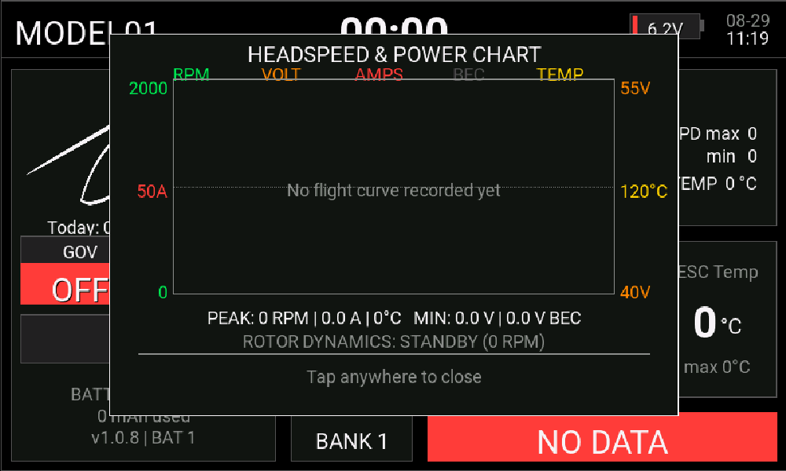

🌟 1. 產品簡介與核心亮點 🌟 1. Overview & Feature Highlights
RBCT (Helicopter Dashboard Widget) 是專為 EdgeTX 開發的直昇機/噴射機高階儀表板小工具。傳統遙控器畫面只能顯示單純數字，飛手在 3D 特技或高速飛行中無法一眼掌握轉速、壓降、電流峰值、ESC 溫度與飛控 PID 檔位。RBCT 整合現代玻璃座艙視覺美學、智慧感測與全自動日誌分析，為飛手提供毫秒級飛行安全保障。
RBCT (Helicopter Dashboard Widget) is a state-of-the-art telemetry dashboard engineered for EdgeTX radios. It transforms raw telemetry into a dynamic, glassmorphism cockpit HUD with automated diagnostics and blackbox logging for RC helicopter and jet pilots.
Vbat / Vcel 精確比例，存儲電壓與 LiHV 高壓鋰電 100% 絕不誤判；通電自動鎖定，空中大螺距抽電不跳 S 數。
Direct FC Vbat / Vcel ratio calculation. Storage and LiHV packs are never misidentified, locked solidly in RAM.


Transp BG，隱藏主背景底色露出自訂桌布，但保留各資訊儀表的半透明磨砂玻璃框。
Translucent background mode revealing radio wallpaper while keeping sleek info cards.

TRN 主題，隱藏所有底框與線條，搭配全域文字黑陰影強化，遙控器桌布成為絕對主角！
Pure frameless design with text drop-shadows, making your wallpaper the centerpiece.

ENGINE TEMP (>120°C 警示) 與 RX PACK (<6.6V 警示)。
Oversized dual gauge layout for Engine Temp (>120°C alert) and RX Pack voltage (<6.6V alert).


RBCT 導入高靈敏全螢幕觸控引擎，主儀表板三大區域輕觸即開，無需進入繁瑣選單即可直覺調出航次統計、單包電池健康與 5 軌動力動態曲線：
RBCT integrates a high-response touch engine. Tap any of the 3 discrete HUD zones to instantly pop up Flight Stats, Battery Health & Sag, or the 5-channel Headspeed & Power Chart:



• 系統韌體需求：EdgeTX 2.8.0 或以上版本。
• 飛控生態系：完整支援 Rotorflight 2.0+ (RF2)、Brain2 / Spirit 遙測協議。 • Supported Radios: RadioMaster TX16S (MK1/MK2/MK3 800x480), TX15 MAX (480x320), and 480x272 color screen radios.
• Firmware Requirement: EdgeTX 2.8.0 or newer.
• Flight Controllers: Rotorflight 2.0+ (RF2), Brain2, and Spirit telemetry.
🛠️ 2. 最新功能與系統升級總覽 🛠️ 2. New Features & Major Capabilities
• 大圖超清抗鋸齒：放入
480x272 或更高畫質去背圖，自動等比縮小並觸發抗鋸齒，邊緣平滑銳利零鋸齒。• 小圖飽滿放大：放入
192x114 小圖自動放大填滿左側框架，不再縮在角落。• 雙向水平垂直置中：各種長寬比照片均自動居中對齊，絕不變形。 • Universal Format: Auto-detects PNG, JPG, and BMP resolutions.
• Downscale Anti-Aliasing: Downscales
480x272 HD images with smooth anti-aliased edges.• Auto-Fill Upscaling: Dynamically upscales small images to fit the frame.
• 2D Centering: Automatically centers images horizontally and vertically.
• TRN 全透無框模式：隱藏所有底色框，遙控器桌布成為絕對主角，搭配全域文字黑陰影強化。
• Transp BG 半透背景：主背景透明但保留各資訊儀表半透明磨砂框。 • 11 Themes: Red, Orange, Yellow, Green, Blue (default), Indigo, Violet, Pink, Peach, Black, TRN.
• TRN Mode: Removes all borders and backgrounds while text drop-shadows maintain contrast.
• Transp BG Switch: Preserves translucent widget frames over custom radio wallpapers.
RGB: 212, 224, 206) 搭配深墨綠高對比文字 (RGB: 15, 25, 20)。• 大太陽直射不反光：在戶外強烈陽光直射下，閱讀清晰度遠超深色介面，0.1 秒即可辨識轉速與電壓。 • Sunlight Legibility: Pale green-gray LCD background with dark graphite text.
• Direct Outdoor Glare: Superior readability under intense sunlight compared to dark themes.
光感主題開關。感應到戶外強光持續 1.5 秒自動切換至 LCD 主題；回到陰影處自動恢復。• 實體開關連動：亦可指派實體開關或邏輯開關，一撥瞬間變身復古液晶儀表。 • Optical Sensing: Auto-switches to LCD theme after 1.5s in bright sunlight.
• Switch Source: Can be linked to physical or logical switches for manual override.
• 流動跑馬燈特效：支援 9 種固定色彩 + `Rainbow` (動態流動彩虹跑馬燈) + 關閉。 • Gimbal Ring Control: Directly manages TX16S MK3 physical gimbal RGB LEDs from Lua.
• Flowing Animation: 9 solid colors plus dynamic flowing **Rainbow** mode and OFF.
RTN 鍵或點擊關閉彈窗時露底層桌布黑屏閃爍。• 文字陰影與對比強化：電池健康度子頁中
CAPACITY 改為高對比純白字體，全域文字標題均具備柔和陰影。
• Seamless Navigation: Zero wallpaper flicker when closing sub-pages or pressing RTN.• Contrast Boost: High-contrast white capacity labels and drop shadows on all text.
• 三色動態電量橫條 (Bat% Bar)：>30% 綠色、15%~30% 橘色、<15% 紅色。 • Core Telemetry: Vbat, Peak Amps (300A+), Consumed mAh, Cell Voltage, ESC Temp, MCU Temp.
• Dynamic Bat% Bar: >30% Green, 15%~30% Orange, <15% Red.
• ENGINE TEMP 汽缸頭溫度：超溫 >120°C 自動亮顯眼大紅字警示與警報音，防止縮缸拉缸。
• RX PACK 接收機電壓：監控 2S 供電，低於 <6.6V 自動紅字警報，防止空中斷電。 • XXL Dual Block Layout: Hides electric metrics and expands into dual oversized gauges.
• ENGINE TEMP: Bold red alert and voice warning when head temp exceeds >120°C.
• RX PACK: Monitors receiver voltage with low-voltage alert below <6.6V.
EGT (燃燒室尾氣溫度，超溫警報)、CORE RPM (100k+ 超高核心轉速)、FUEL % (油箱剩餘油量百分比與低油位語音提醒)、ECU STATE (OFF / START / RUN / COOL / ERROR 狀態碼)。
• Aviation EICAS HUD: EGT (exhaust gas temp alert), CORE RPM (100k+ core speed), FUEL % (fuel percentage with voice alert), ECU STATE (real-time ECU operating state).
Vbat / Vcel 飛控原生比值精確計算，存儲電壓 (12S @ 45.9V) 絕不誤判 11S，LiHV 高壓 (12S @ 52.2V) 絕不誤判 13S。• 通電記憶體鎖定 (S-Lock)：通電即鎖定至 RAM，空中暴力 3D 大螺距抽電壓降 S 數絕不亂跳，換電池自動重置。 • Ratio Algorithm: Uses
Vbat / Vcel ratio to 100% accurately identify storage and LiHV packs.• RAM S-Lock: Locks S-count into RAM upon connection; mid-air voltage sags never cause S-count jump.
• 獨立日誌與圖表檔案：每包電池在 SD 卡維持專屬的 10 趟報表 (
logbook_<機型>_BAT1~6.txt) 與 曲線圖表 (chart_<機型>_BAT1~6.txt)。
• Independent Metrics: Tracks CYCLES, MIN VOLT, MAX TMP, and AVG DUR for BAT 1 ~ BAT 6.• Dedicated Files: Maintains separate logbook and chart files for each battery pack.
--- 時，開箱即自動偵測 6POS 實體按鍵（6P1..6P6、6POS），按鍵瞬間切換當前電池檔位。• 選單自訂指派：亦可於
Bat Track 選單手動指定開關、通道或旋鈕進行檔位切換。
• Full Auto-Sense (Default): When set to ---, auto-detects physical 6POS buttons (6P1..6P6, 6POS) for instant battery switching out of the box.• Custom Assignment: Optionally assign specific channel, switch, or pot via
Bat Track option.
• 動態水印回饋：左下角版本水印自動擴充顯示當前選定的電池編號（如
v1.0.8 | BAT 1）。
• SC↓ Fleet Table: Displays fleet matrix; active battery row is highlighted in green.• Dynamic Watermark: Lower-left watermark updates to show active battery (e.g.
v1.0.8 | BAT 1).
• 實體確認音效：插上電池觸發 1800Hz 提示音，切換電池檔位觸發 2200Hz 切換音。
• 字庫高相容語句：文字全數採用 ASCII 符號與標準字符，徹底消除缺字方塊。 • 10s Banner: Smooth countdown progress bar that auto-hides immediately upon arming.
• Audio Beeps: 1800Hz beep on battery plug-in, 2200Hz beep on pack switch.
• ASCII Formatting: Guarantees zero missing characters across all firmware versions.
• 時間軸完美對齊：完美對齊 X 軸時間，精準比對「大螺距抽電電流突波」與「BEC 掉壓」之因果關係。 • Dual Layering: Upper layer (RPM, VOLT, AMPS); lower layer (TMP, BEC).
• Aligned Time Axis: Correlates heavy pitch current spikes with BEC voltage sag in real time.
2. 電池 C 數內阻壓降：對比大電流 (>120A) 下總電壓跌落幅度。
3. BEC 供電舵機負載：劇烈 3D 擺動時 BEC 壓降超過 0.8V 預警。
4. 電調散熱與齒比溫升：監控電調 3 分鐘溫升斜率是否突破 85°C。 1. Gov PID Tuning: Evaluates RPM drop and oscillations during collective punches.
2. Battery Sag Check: Correlates heavy current draw with pack voltage collapse.
3. BEC Load Safety: Warns if BEC dips >0.8V during fast servo motion.
4. ESC Thermal Health: Tracks temperature rise slope under load.
• 常態刻度標籤：左右兩側刻度數值標籤永遠固定清晰顯示。 • Dynamic Ceilings: Automatically expands Y-axis ceilings based on max telemetry values for any helicopter class.
• Fixed Scale Labels: High-visibility axis values permanently rendered.
• 常數級負載：等比例抽出 50 個關鍵點繪圖，CPU 負載維持常數級 $O(1)$，絕不死機。 • 3.0s Sampling: Captures data every 3.0s, keeping 200 points in RAM for up to 10 minutes.
• O(1) CPU Load: Decimates to 50 key points for rendering with zero latency.
• 9 欄完整極值摘要：記錄起飛時間 (RTC 時:分)、飛行時長、最高轉速 (MAX RPM)、最高電流 (MAX A)、最高功率 (MAX W)、最低電壓 (MIN V)、最低接收 (MIN 1RSS)、最高溫度 (MAX TMP)、已消耗 (mAh)。 • Instant Logbook: Flip SC switch to MID to inspect last 10 flight records.
• 9-Column Summary: Logs Takeoff Time (RTC HH:MM), Duration, Peak RPM, Max Amps, Max Power (W), Min Volt, Min RSSI, Max Temp, mAh.
chart_<機型>_BAT1~6.txt。• 關機不遺失：遙控器關機重開機隨時可還原最新一次飛行的 5 色動態折線圖。 • Auto-Save on DISARM: Writes telemetry points to SD card upon disarming.
• Non-Volatile Memory: Reloads the latest flight chart anytime even after power-cycling.
rxbatlow.wav。• 電變高溫警示 (ESC Temp Warn)：40°C ~ 110°C 可調 (預設 60°C)，過熱發出
telemwarn.wav。• 油機高溫警示 (Nitro Temp Warn)：80°C ~ 160°C 可調 (預設 120°C)，防縮缸過熱警報。 • BEC Low Alert: 5.0V ~ 8.0V configurable (default 6.6V) with 2000Hz beep and voice.
• ESC Temp Alert: 40°C ~ 110°C configurable (default 60°C).
• Nitro Temp Alert: 80°C ~ 160°C configurable (default 120°C).
Bat% Voice 並設定低電門檻 (15%~50%，預設 30%)，電量降至 30%、20%、15% 跨階自動播報剩餘電量百分比。
• Step-Down Announcements: Automatically announces remaining percentage at each threshold step (30%, 20%, 15%...).
RF_Heli），直昇機通電後，小工具自動讀取飛控廣播之 `Craft Name`（如 S200、GOBLIN700、RAW580）。• 檔名一致自動換圖：只要 SD 卡
/IMAGES/ 或 /WIDGETS/RBCT/modelImage/ 存放同名圖檔（如 S200.png），連線瞬間自動載入對應愛機去背照片，並於左上角同步顯示該機型抬頭。• 真正一組設定通吃全機隊：無需在遙控器為每台直昇機建立獨立模型，調機換機無縫切換！ • Universal Fleet Profile: Single radio model (e.g.
RF_Heli) auto-adapts to connected helicopter via Rotorflight Craft Name.• Auto Picture Load: Automatically matches SD image files (e.g.
/IMAGES/S200.png) to display craft photo and HUD callsign on connection.• True Multi-Craft Sharing: One single setup drives your entire helicopter fleet seamlessly!
flight_count_<機型>.txt)、機隊電池 (battery_<機型>.txt)、黑盒子日誌 (logbook_<機型>.txt) 自動依連線機型分開記錄，機隊數據完全不混淆。
• Zero Cross-Contamination: Flight count, battery logs, and logbook tables are stored separately per craft.
EVT_TOUCH_BREAK 離手事件與 touchState.tap，徹底解決 EdgeTX 判斷過嚴需連點多次問題。• 250ms 防抖：反應速度倍增，輕觸放開即刻響應。 • Instant 1st Tap: Captures finger release with
EVT_TOUCH_BREAK for 100% first-tap response.• 250ms Debounce: Snappy responsiveness without false double-triggers.
FLIGHT SESSION STATS 當前航次極值統計與一鍵清零。2. 左下方區塊 (電量條/電壓/mAh)：點擊開啟
BATTERY HEALTH 電池健康、最大壓降與放電趨勢。3. 右上方轉速 (RPM 大數字)：點擊開啟
HEADSPEED & POWER CHART 5 軌動力曲線與空氣動力學分析。
1. Upper-Left: Opens Flight Session Stats and one-tap reset panel.2. Lower-Left: Opens Battery Health, Max Sag, and Discharge Status.
3. Upper-Right: Opens Headspeed & Power Chart and Rotor Aerodynamics.
本日清零 與 總計清零 觸控操作。
Tracks Today/Total flight counts with direct touch reset buttons.
Today (今日架次) 與 Total (歷史總架次)。• 跨日自動重置：午夜 00:00 自動將 Today 歸零；支援指派開關 (如 SH) 手動歸零 Today (不影響 Total)。 • Dual Counters: Displays Today and Total flight counts simultaneously.
• Auto-Midnight Reset: Today resets to 0 daily; manual momentary switch supported.
• 標配字庫校驗：徹底過濾缺失字元，消除問號方塊；內建
option_aliases 完美相容舊設定檔。
• Auto Localization: Automatically selects Traditional Chinese or English menu.• Standard Glyphs: 100% compatible with radio dot-matrix fonts with legacy aliases.
• 飛手數位簽名：將右下角 NO DATA 替換為飛手專屬無底框純白簽名檔。 • Arm Invert: Inverts arming indicator direction.
• UserName: Displays custom callsign signature on bottom right.
| 問題分類Category | 歷史異常現象與潛在風險Defect & Potential Risk | RBCT 深度修復與防護方案RBCT Fix & Defensive Solution |
|---|---|---|
| 電流數值Current | 大於 200A 之大電流數值被錯誤除以 10 倍 (如 220A 顯示為 22A)。>200A current was erroneously divided by 10 (e.g. 220A displayed as 22A). | 重構電流解析邏輯，完美支援 700/800 級直昇機 300A+ 極限放電大電流！Rebuilt current telemetry parser to accurately render 300A+ extreme peaks. |
| 電池 S 數S-Count | 飛行中大螺距瞬間壓降導致 S 數亂跳 (如 12S 瞬間跳 10S 導致警告亂叫)。In-flight collective punch voltage sag caused S-count jitter (e.g. 12S to 10S). | 採用 Vbat / Vcel 飛控原生比值並於通電時鎖定至記憶體 (S-Lock)，空中絕不跳動！Uses direct Vbat / Vcel ratio and locks S-count into RAM upon connection. |
| 邏輯開關Logical Sw | 使用邏輯開關 (Logical Switch) 作為解鎖開關 (Arm Source) 時觸發腳本崩潰。Using Logical Switch as Arm Source crashed Lua execution. | 加入對布林值 (boolean) 與數值來源的雙重容錯過濾，徹底杜絕崩潰。Added type checking for both boolean and numeric sources to eliminate crashes. |
| Lua 設定儲存Settings Save | 在 TX16S 遙控器 Lua 介面設定後直接按 Return 退出導致設定自動還原為 Hide。Exiting Lua menu directly with Return caused settings to roll back to Hide. | 在說明文件與引導中加入明確的「確認 ➡️ 實體 SYS 鍵寫入 SD 卡」操作標準。Established clear "Confirm ➡️ Press physical SYS key to save" workflow. |
| 極值數據Min/Max | 降落更換新電池時，最低電壓數值卡死在 0V 且無法自動重新初始化。Lowest voltage was stuck at 0V and failed to reset upon battery reconnection. | 偵測到電池拔插與新電壓輸入時，自動執行極值統計緩衝區重新初始化。Auto-reinitializes telemetry extrema buffer upon detecting new battery connection. |
| 次頁退出閃爍Sub-Page Exit | 開啟 Logbook / Session Stats 彈窗後按 RTN 鍵退出時偶發桌布黑屏閃爍。Pressing RTN to exit sub-pages caused occasional wallpaper flicker/black screen. |
重構次頁繪製緩衝區管理，實現零掉幀、零閃爍的安全返回。Optimized sub-page frame buffer cleanup for smooth, zero-flicker transitions. |
| Bank 檔位Bank Sync | Auto 模式下切換飛控 Profile 時畫面 Bank 標籤卡在 Bank 1 不更新。Bank indicator stuck at Bank 1 when switching FC PID profile in Auto mode. | 修復讀取優先權，優先讀取 Rotorflight 原生 PID# MSP 感測器。Prioritized native Rotorflight PID# MSP sensor over FM status. |
| 油機電壓置中Nitro Alignment | 油機模式右側 RX PACK 特大電壓數字於面板框內視覺偏右。RX PACK voltage text slightly misaligned in Nitro mode panel. | 微調橫向繪製 X 軸偏移量，使超大數值與單位達到完美居中對齊。Adjusted horizontal X offset for perfect center alignment. |
| 預設機型模式Default Heli Mode | 新建立小工具時機型預設索引錯位。Default Heli Type index misalignment on clean model creation. | 校正 parseHeliType 索引對應，新模型開箱一律預設為 `電機 (Electric)` 模式。Ensured default heli mode is Electric on initial widget creation. |
| 字庫缺字Font Glyphs | EdgeTX 點陣精簡字庫缺字（如「若」）與全形標點符號跳過隱形。Missing characters and full-width punctuation dropped in EdgeTX fonts. | 全域改採 ASCII 高相容標點符號與 100% 內建字庫字元，字體與符號端正呈現。Adopted high-compatibility ASCII punctuation and verified standard font glyphs. |
🚀 3. 快速安裝與啟用指南 🚀 3. Setup & Installation Guide
-
步驟 1：複製檔案至記憶卡Step 1: Copy Files to SD Card
下載並將RBCT資料夾完整複製到遙控器 SD 卡內的WIDGETS目錄下 (路徑為/WIDGETS/RBCT)。 Download and copy the completeRBCTfolder into the radio's SD card underWIDGETSdirectory (path:/WIDGETS/RBCT). -
步驟 2：遙控器畫面新增全螢幕小工具Step 2: Add Full Screen Widget
在遙控器上長按TELEMETRY(或SYS) 進入 Telemetry (遙測) 畫面設定 ➔ 新增一個 全螢幕 (Full screen) 區塊 ➔ 選擇RBCT小工具。 Long pressTELEMETRY(orSYS) on radio ➔ Screen layout setup ➔ Create a Full Screen block ➔ SelectRBCTwidget. -
步驟 3：RF 2.2 自訂遙測 CLI 一鍵設定Step 3: RF 2.2 Custom Telemetry CLI Setup
RF2.2 自訂遙測無須手動自選，請在 Rotorflight Configurator 的 CLI (命令列) 中貼上以下指令並按 Enter 執行即可： RF2.2 custom telemetry requires no manual selection. Simply paste the following into Rotorflight Configurator CLI and press Enter:set crsf_telemetry_mode = CUSTOM set telemetry_sensors = 3,4,5,6,8,15,43,50,52,60,61,88,89,90,91,92,93,95,0,0,0,0,0,0,0,0,0,0,0,0,0,0,0,0,0,0,0,0,0,0 set crsf_telemetry_link_rate = 500 set crsf_telemetry_link_ratio = 8 save
-
步驟 4：搜尋感測器 (Discover Sensors)Step 4: Discover Telemetry Sensors
直昇機通電連線，遙控器進入MODEL SETUP➔Telemetry (遙測)➔ 點擊 **`Discover new sensors` (搜尋感測器)**。螢幕刷出 `RPM` 與 `Vbat` 各項數值即大功告成！ Power up the helicopter, go toMODEL SETUP➔Telemetry➔ Tap **`Discover new sensors`**. Once sensor values appear, setup is complete!
tw (繁中)、cn (簡中)、en (英文) 三套完整的 54 檔語音包。遙控器 EdgeTX 系統在飛行時，只會直接讀取記憶卡根目錄下的
/SOUNDS/ 資料夾（如 /SOUNDS/tw/、/SOUNDS/cn/、/SOUNDS/en/）。因此，請飛友依照您所習慣的語言，將音檔複製並覆蓋至記憶卡根目錄的
/SOUNDS/ 對應目錄下！
RBCT provides 3 complete 54-file voice packages: tw (Traditional Chinese), cn (Simplified Chinese), and en (English).EdgeTX radios will ONLY read voice files directly from the root
/SOUNDS/ directory on the SD card (e.g. /SOUNDS/tw/, /SOUNDS/cn/, /SOUNDS/en/).Please copy the voice files of your preferred language to the root
/SOUNDS/ directory on your SD card!
cn 與 en 目錄，但強烈建議飛友可將記憶卡根目錄現有的 /SOUNDS/cn/ 複製一份並命名為 /SOUNDS/tw/（保留底層數字發音字典），再將 SOUNDS/tw/ 覆蓋進去，即可享受最完美的繁中女性語音副駕駛！
MK3 / EdgeTX natively offers a Traditional Chinese (tw) voice option. We recommend copying the existing /SOUNDS/cn/ folder on your SD card to /SOUNDS/tw/, then overwriting with SOUNDS/tw/ files to enjoy authentic Traditional Chinese voice prompts!
-
步驟 1：依個人喜好複製語音包至 SD 卡根目錄
/SOUNDS/Step 1: Copy Selected Voice Pack into SD Card/SOUNDS/
• 繁體中文用戶（推薦 🌟）：若 SD 卡沒有tw資料夾，建議先將 SD 卡根目錄的/SOUNDS/cn/複製一份並命名為/SOUNDS/tw/，再將專案SOUNDS/tw/內所有.wav音檔複製並覆蓋進去。
• 簡體中文用戶：直接將專案SOUND/cn/內所有.wav音檔，複製並覆蓋到 SD 卡根目錄的/SOUNDS/cn/下。
• 英文語音用戶：直接將專案SOUND/en/內所有.wav音檔，複製並覆蓋到 SD 卡根目錄的/SOUNDS/en/下。 • Traditional Chinese (Recommended 🌟): If/SOUNDS/tw/does not exist, copy/SOUNDS/cn/to/SOUNDS/tw/first, then copy & overwrite withSOUNDS/tw/files.
• Simplified Chinese: Directly copy & overwrite all files fromSOUND/cn/to/SOUNDS/cn/on SD card root.
• English: Directly copy & overwrite all files fromSOUND/en/to/SOUNDS/en/on SD card root. -
步驟 2：遙控器系統設定指向對應語音語言
Step 2: Configure Radio Voice Language in System Settings
1. 遙控器長按SYS鍵 ➔ 進入 Radio Setup (系統設定)。
2. 找到 Voice Language (語音語言) 選項：
• 繁體中文用戶請選擇 ➔tw
• 簡體中文用戶請選擇 ➔cn
• 英文用戶請選擇 ➔en1. Long pressSYSbutton on your radio ➔ Enter Radio Setup.
2. Locate Voice Language and selecttw,cn, oren. -
步驟 3：啟用 RBCT 語音警示開關
Step 3: Enable RBCT Voice Alarm in Widget Menu
在主畫面長按進入 RBCT Widget 設定選單，將語音警示 (Voice Alm)與電量語音 (Bat% Voice)設為 ON，即可享受階梯電量播報、BEC 低壓、電變高溫、主電斷開、救機等全方位真人語音！ In RBCT widget options, turn ONVoice AlmandBat% Voiceto enjoy step battery warnings, BEC low voltage, ESC overheat, and power loss alarms!
解鎖開關 (Arm Source) ➔ 指派為您的油門鎖定/解鎖開關 (如 SF 開關)。2.
日誌開關 (Logbook Sw) ➔ 指派為您的三段開關 (如 SC 開關)。3. 其餘設定（包括 BANK、電池等）**保持預設不動** 即可直接安全開飛！ 1.
Arm Source ➔ Assign to your throttle arm switch (e.g. SF switch).2.
Logbook Sw ➔ Assign to a 3-position switch (e.g. SC switch).3. Leave all other options **at default values** for immediate safe flying!
⚙️ 4. 小工具設定選單說明 ⚙️ 4. Widget Settings Menu & Options
RBCT 小工具支援繁體/簡體中文與英文自動語系偵測，共有 22 項詳細自訂選項可於 EdgeTX 桌面設定中進行調配：
RBCT supports automatic multilingual detection (Traditional/Simplified Chinese and English). A total of 22 customizable options are available in EdgeTX widget settings:
| 編號No. | 繁體中文選單 (`options_zh`)Traditional Chinese Menu | 英文選單 (`options_en`)English Menu | 類型Type | 說明與設定細節Description & Usage |
|---|---|---|---|---|
| 1 | UI 主題 | Theme |
CHOICE |
選擇 11 種面板色彩風格（含 Black、TRN、Pink、LCD 高反差）。 Select from 11 color themes (including Black, TRN transparent, Pink, and high-contrast LCD). |
| 2 | 背景 (BG) | Transp BG |
BOOL |
開啟後主背景變透明（保留資訊面板半透明框）。 Makes main background transparent while preserving translucent widget borders. |
| 3 | 搖桿燈開關 | DispLED |
BOOL |
TX16S 搖桿實體 RGB 光圈 LED 開關。 Master switch for TX16S physical gimbal RGB ring LEDs. |
| 4 | 搖桿燈顏色 | LED Color |
CHOICE |
光圈顏色選擇（含 Rainbow 流動彩虹跑馬燈）。 Physical gimbal LED color selection (including dynamic flowing Rainbow effect). |
| 5 | 機型選擇 | Heli Type |
CHOICE |
切換動力模式：電機 (Electric)（預設）、油機 (Nitro)、Turbine (Jet)。
Switch powertrain mode: Electric (default), Nitro, or Turbine (Jet).
|
| 6 | 解鎖開關 | Arm Source |
SOURCE |
指定遙控器實體解鎖開關（如 SF）。 Assign transmitter physical arming switch (e.g. 2-pos switch SF). |
| 7 | 解鎖圖示反向 | Arm Icon Invert |
BOOL |
解鎖狀態圖示邏輯反轉（上下方向互換）。 Invert arming status icon display direction/logic. |
| 8 | 日誌開關 | Logbook Sw |
SOURCE |
指定三段開關呼叫飛行日誌（中段：Logbook/圖表，下段：Fleet 管理）。 Assign 3-position switch to open Logbook (Mid: telemetry chart, Low: Fleet manager). |
| 9 | BANK 開關 | Bank Src |
SOURCE |
指定實體開關切換 Bank 1~3（--- 為 Auto 自動讀取遙測）。
Assign physical switch for Bank 1~3 (--- for Auto telemetry detection).
|
| 10 | 光感主題開關 | Light Theme Sw |
SOURCE |
指定實體開關或光感應器瞬間切換 LCD 液晶高對比主題。 Assign physical switch or light sensor to dynamically toggle high-contrast LCD theme. |
| 11 | 語音警示 | Voice Alm |
BOOL |
智能語音副駕駛與極值監控總開關。 Master switch for intelligent voice copilot and extreme telemetry alarms. |
| 12 | BEC 電壓警示 | BEC Volt Warn |
CHOICE |
接收機供電低壓語音警告門檻（5.0V ~ 8.0V，8段）。 Receiver/BEC low voltage voice alert threshold (5.0V ~ 8.0V, 8 levels). |
| 13 | 電變高溫警示 | ESC Temp Warn |
VALUE |
電機電調過熱警告門檻數值（40°C ~ 110°C，預設 60°C）。 ESC over-temperature warning threshold in Electric mode (40°C ~ 110°C, default 60°C). |
| 14 | 油機高溫警示 | Nitro Temp Warn |
VALUE |
油機汽缸頭過熱警告門檻數值（80°C ~ 160°C，預設 120°C）。 Cylinder head overheat warning threshold in Nitro mode (80°C ~ 160°C, default 120°C). |
| 15 | 電量語音 | Bat% Voice |
BOOL |
定時/跨階語音播報剩餘電量百分比。 Enable periodic and step-down battery percentage voice announcements. |
| 16 | 低電警報 | Bat Low % |
VALUE |
低電量觸發警示的百分比（15% ~ 50%，預設 30%）。 Battery percentage threshold to trigger low battery alert (15% ~ 50%, default 30%). |
| 17 | 使用者名稱 | UserName |
STRING |
替換右下角 NO DATA 為專屬飛手英文簽名。 Replace bottom-right NO DATA placeholder with pilot custom signature/callsign. |
| 18 | 計時器選擇 | Timer |
VALUE |
頂部中央對應之 Timer 編號（1 ~ 3）。 Select transmitter timer (Timer 1 ~ 3) displayed at top center. |
| 19 | 今日飛行次數重置 | Reset Flight Cnt |
SOURCE |
指定實體開關將今日飛行架次重置為 0。 Assign physical switch (e.g. SH momentary) to reset today's flight count to 0. |
| 20 | 電池日誌 | Bat Track |
SOURCE |
切換目前電池編號（預設 --- 為全自動偵測 6POS 實體鍵；亦可手動指派開關或旋鈕切換 BAT 1 ~ 6）。
Selects active battery pack (Defaults to auto-detecting physical 6POS buttons when set to ---; or assign a custom switch/knob for BAT 1 ~ 6).
|
| 21 | 電池重置 | Rst BatLog |
SOURCE |
指定實體開關重置目前電池的所有歷史紀錄。 Assign physical switch to wipe and reset historical logs for active battery. |
| 22 | UI 語言 | UI Lang |
CHOICE |
設定主儀表板與彈窗之介面語言。可選：自動 (Auto)（依遙控器韌體原生語系自動適配）、英文 (English)（強制經典航太英文 HUD）。
Configures dashboard HUD and modal popups language. Options: Auto (auto-adapts to radio firmware native language), English (forces classic aerospace English HUD).
|
針對支援方向桿 RGB 光圈的遙控器 (如 RadioMaster TX16S MK3)，小工具提供可以直接在 Lua 設定中同步控制實體光圈顏色的功能！在選單 LED Color 可選擇：Red、Orange、Yellow、Green、Blue、Indigo、Violet、Pink、Peach、`Rainbow` (動態跑馬燈彩虹) 或 OFF。
For radios equipped with physical RGB gimbal rings (such as RadioMaster TX16S MK3), RBCT can directly control LED colors via Lua settings! In LED Color, select: Red, Orange, Yellow, Green, Blue, Indigo, Violet, Pink, Peach, `Rainbow` (Dynamic Flowing Rainbow), or OFF.
於小工具設定選單中輸入您的英文簽名檔 (如 Ryan Kuo)。在遙測訊號正常時，系統會將右下角預設的 "NO DATA" 區塊替換為您個人專屬的無底框純白簽名文字！
Enter your callsign or name (e.g. Ryan Kuo) in the widget menu. When telemetry is active, the system replaces the bottom-right "NO DATA" box with your clean, custom white callsign signature!
• 方法 B (背景開關)：將 `Transp BG` (透明背景) 設定為 `1 (ON / 開啟)`！
主畫面的底色框會完全消失，呈現極具現代感的全透明玻璃懸浮儀表板風格！ • Method A: Set `Theme` option to `TRN` (Transparent Theme).
• Method B: Set `Transp BG` to `1 (ON)`.
Panel backgrounds vanish into a sleek glassmorphism dashboard!
RBCT v1.0.8 導入了全新的多語系即時切換引擎，主儀表板、三大觸控診斷彈窗、黑盒子飛行日誌（Tab 1）與機隊電池總表（Tab 2）全面支援三語對映：
RBCT v1.0.8 introduces a dynamic multilingual UI engine covering the main HUD, touch diagnostic popups, logbook (Tab 1), and battery fleet manager (Tab 2):
| 選項模式Option Mode | 運作原理與適用情境Mechanism & Best Use Case | 介面呈現效果HUD Display |
|---|---|---|
| 1. 自動 (Auto) (預設推薦 🌟)1. Auto (Default 🌟) |
環境語系自動適配（零缺字防呆保證）！ 自動偵測 EdgeTX 韌體原生字庫：繁中韌體 (TW) 自動呈現 100% 官方點陣相容繁體、簡中韌體 (CN) 自動呈現簡體、英文系統呈現經典 HUD。徹底根絕跨韌體字庫缺失留白之問題！Auto Firmware Adaptation (Zero Missing Glyphs)! Detects EdgeTX native firmware: TW firmware renders 100% font-safe Trad Chinese, CN renders Simp Chinese, EN renders classic HUD. | 隨韌體語系完美自動適配Dynamic native auto-switch |
| 2. 英文 (English)2. English | 強制使用經典直升機航太英文 HUD！ 顯示 RPM、GOV、ARMED、SAFE、BATTERY、AMPS 等國際通用標準飛控縮寫，純粹專業。Locks to classic aerospace helicopter HUD! Displays standard acronyms (RPM, GOV, ARMED, SAFE, BATTERY, AMPS). |
純英文 HUD 介面Pure English HUD |
UI 語言 (UI Lang) 與 Option #17 語音播報 採獨立架構運作！飛手可依喜好自由混搭，例如：「經典英文 HUD 視覺介面 + 繁體中文真人口語播報」 或 「繁體中文儀表板 + 英文語音播報」，享受極致彈性！
UI Lang and Option #17 Voice Alarms are completely decoupled! Pilots can freely combine English HUD visual + Traditional Chinese voice alarms or Traditional Chinese HUD + English voice alarms for ultimate customization!
🖼️ 5. 模型圖片與動態辨識 🖼️ 5. Craft Image DIY & Dynamic Recognition
| 優先級 | Tier | 搜尋目錄與檔名格式 | Search Target | 說明與備註 | Description |
|---|---|---|---|---|---|
| Tier 1 | /WIDGETS/RBCT/modelImage/<機型>.png或 /IMAGES/<機型>.png |
優先比對 Rotorflight 飛控連線回傳之 Craft Name 或 EdgeTX 模型名稱（支援 .png / .jpg 及去除首字符號） | Matches Rotorflight FC broadcasted Craft Name or EdgeTX Model Name (supports .png, .jpg & prefix stripping) | ||
| Tier 2 | /IMAGES/<bitmap> |
遙控器 EdgeTX Model Setup 中指派之原生圖檔 | Native EdgeTX Model Setup bitmap image | ||
| Tier 3 | /WIDGETS/RBCT/default.png |
當前兩者皆未找到時，自動載入預設RF圖片 | Default helicopter silhouette fallback |
remove.bg 網站一鍵去背，存為透明 PNG。
Use iOS photos cutout or remove.bg site to remove background and save as transparent PNG.
S200，檔名就命名為 S200.png。
Filename MUST match FC Craft Name or EdgeTX Model Name! E.g. If RF Craft Name is S200, name the file S200.png.
SD卡/IMAGES/S200.png 或 SD卡/WIDGETS/RBCT/modelImage/S200.png 均可！
Copy to either SD Card/IMAGES/S200.png or SD Card/WIDGETS/RBCT/modelImage/S200.png!
480 x 272 像素（或 400 x 240 至 800 x 480）。• 長寬比例：標準
16:9 或 4:3 橫式去背透明 PNG。• 檔案大小：建議控制在 50 KB ~ 250 KB 以內，載入秒開且不佔記憶體。
• 智慧抗鋸齒引擎：小工具內建智慧 Auto-Fit 超採樣縮放，會自動將
480x272 高清圖等比例壓縮至左側 246x138 框內，邊緣極致平滑銳利、完全零鋸齒！
• Optimal Resolution: 480 x 272 pixels (or 400 x 240 to 800 x 480).• Aspect Ratio: ~
16:9 or 4:3 horizontal transparent PNG.• File Size: Keep under 250 KB for smooth rendering and fast boot.
• Auto-Fit Anti-Aliasing: Built-in supersampling downscales
480x272 images into the 246x138 frame with zero jaggies and razor-sharp clarity!
Hide，請務必按照遙控器實體按鍵的「確認 ➡️ 儲存 (SYS)」流程操作。
In the TX16S Lua interface, directly exiting will revert to Hide. Always follow the "Confirm ➡️ Save (SYS)" workflow.
SYS 進入 RF Tool ➡️ 找到 Model on TX 那一行 ➡️ 按下滾輪（短按 Enter），此時 Hide 字體會反白閃爍。
Long press SYS ➡️ RF Tool ➡️ Highlight Model on TX ➡️ Press roller (Enter) so Hide starts blinking.
Show ➡️ 再次按下滾輪（短按 Enter） 鎖定數值。
Scroll roller to select Show ➡️ Press roller again (Enter) to lock the value.
SYS 鍵。螢幕閃爍「Saving / 儲存中」後即真正寫入 SD 卡。
Do NOT press Return to exit! Press the physical SYS button on the left panel. The screen will flash "Saving" and write to SD card.
Model on TX 分頁 ➡️ 將 Set name on Tx 改為 On ➡️ 按 SYS 鍵儲存！
Go back one menu level ➡️ Open the newly appeared Model on TX page ➡️ Set Set name on Tx to On ➡️ Press SYS to save!
📊 6. 主儀表板與遙測感測器 📊 6. Main Dashboard & Telemetry Sensors
| 感測器代碼 | Sensor Name | 中文名稱 | Description | 數據來源與來源協議 | Data Source |
|---|---|---|---|---|---|
Vbat |
動力電池總電壓 | Main Battery Voltage | 電調 / 接收機回傳總電壓 (V) | ESC / Receiver telemetry (V) | |
Curr / Amps |
即時放電電流 | Real-time Current | 電調電流感測器 (A) | ESC current sensor (A) | |
Hspd |
主旋翼轉速 (HeadSpeed) | Main Rotor RPM | 電調 / 飛控 RPM 轉速感測器 | ESC / FC Main RPM sensor | |
Tspd |
尾馬達轉速 (Tail Motor Speed) | Tail Motor RPM | 直驅尾馬達電調轉速感測器 (無尾馬達時自動隱藏) | Direct-drive Tail ESC RPM sensor (Auto-hidden if none) | |
Capa |
已消耗容量 (mAh) | Consumed Capacity | 電調累計容量計數 (mAh) | ESC accumulated capacity (mAh) | |
Bat% |
動力電池剩餘電量百分比 | Battery Percentage | 依據單芯電壓動態計算 (0%~100%) | Calculated based on per-cell voltage | |
Tesc |
主電調溫度 / 汽缸頭溫度 | ESC / Cylinder Head Temp | 電調 NTC 溫感 / 油機汽缸頭感應器 (°C) | ESC NTC sensor / Gas engine head temp (°C) | |
Tmcu |
飛控 MCU 核心溫度 | Flight Controller MCU Temp | Rotorflight 飛控晶片內部溫感 (°C) | Rotorflight MCU internal temp (°C) | |
Vbec |
BEC 接收機 / 伺服器電壓 | BEC / Rx Voltage | 接收機供電電壓 (V) | Receiver power supply voltage (V) | |
Vcel |
單芯平均電壓 | Average Cell Voltage | 總電壓除以自動判斷之 S 數 (V/Cell) | Pack Vbat divided by auto-detected S-count | |
PID# / Bank |
飛控當前 PID Profile 檔位 | Active PID Profile (Bank) | Rotorflight MSP 協議即時回傳 (Bank 1~3) | Rotorflight MSP protocol feedback (Bank 1~3) | |
Gov |
定速器 GOV 狀態 | Governor GOV Status | OFF / INITIAL / SPOOLUP / ACTIVE / AUTOROTATION | OFF / INITIAL / SPOOLUP / ACTIVE / AUTOROTATION |
rf2bg.lua (Rotorflight 2 背景遙測腳本)，小工具將無法自動讀取飛控回傳的 PID Profile (Bank 檔位)、Rate Profile 與 GOV 定速狀態！
Without rf2bg.lua installed on your SD card, automated Bank (PID Profile) and GOV status telemetry will NOT function!
在直昇機飛控中，BANK 就像是汽車的「自排檔位」或「飛行模式」！ Bank 1 (一檔/溫和航線)、Bank 2 (二檔/特技 3D)、Bank 3 (三檔/暴力 3D)。
In helicopter flight controllers, BANK acts like an automatic transmission gear or flight mode! Bank 1 (Cruise), Bank 2 (Sport 3D), Bank 3 (Hard 3D).
| 設定狀態 | Setting State | RBCT 小工具運作原理 | Widget Principle | 儀表板畫面呈現與連動影響 | UI Impact |
|---|---|---|---|---|---|
| 情況 A：設定為 `---` (預設推薦)Case A: Set to `---` (Recommended) |
自動讀取飛控 PID 遙測！ 自動感測飛控 (Rotorflight, Brain2, Spirit) 回傳的 `PID#` 信號。 |
Auto-reads FBL PID telemetry! Auto-senses `PID#` telemetry from FC (Rotorflight, Brain2, Spirit). |
畫面右上角真實同步顯示飛控當前真正的檔位 (如 `Bank 1`)。飛控切到哪檔，螢幕就顯示哪檔！ | Displays real-time active FBL Bank profile on upper-right header. Syncs automatically with FC! | |
| 情況 B：手動指派開關 (例如 SE 開關)Case B: Manual Switch (e.g. SE switch) |
強行讀取遙控器實體開關！ 忽略飛控遙測，依據 SE 開關位置（上/中/下）強制切換。 |
Reads physical radio switch directly! Overrides FC telemetry and switches based on SE switch position. |
適合用於「舊款無遙測飛控」。撥動 SE 開關時，畫面上的 Bank 標籤會隨開關連動切換。 | Useful for older non-telemetry FBLs. Toggling SE switch updates Bank label on screen. |
• 傳統機械尾傳 (Shaft/Belt Drive) 與油機：如果是傳統軸傳/皮帶尾翼或 Nitro 油機，小工具會 **自動隱藏 `TAIL RPM`**，避免畫面出現無效數據。 • Direct Drive Tail: Auto-detects `Tspd` telemetry and displays `TAIL RPM`.
• Belt/Shaft Tails & Nitro: Auto-hides `TAIL RPM` for mechanical tails or Nitro mode.
RBCT 主儀表板將全螢幕劃分為三大直覺觸控感應熱區。飛手無需翻找選單或撥動實體開關，直接在彩螢幕上輕觸相應區塊，即可毫秒級叫出專屬即時診斷彈窗（點擊螢幕任意位置即可關閉返回）：
RBCT divides the main HUD into three intuitive touch hotspot zones. Simply tap any zone on your color touchscreen for instant diagnostic popups (tap anywhere to dismiss):
• 顯示內容：即時展示
TODAY（本日飛行次數）與 LIFETIME TOTAL（歷史總架次）。• 觸控按鈕：提供
RESET TODAY (本日清零) 與 RESET TOTAL (總計清零) 兩個獨立按鈕，免撥開關一鍵歸零並即時存檔！
• Hotspot: Upper-left corner (Craft image, Today/Total flight counts, Arm state).• Metrics: Displays active
TODAY flights and LIFETIME TOTAL flight counts.• Actions: Includes dedicated touch buttons
RESET TODAY and RESET TOTAL for instant zeroing.
• 顯示內容：
CAPACITY % 剩餘電量、Voltage Sag 飛行最大瞬間壓降、Pack IR (Est) 預測電池包內阻。• 放電趨勢圖：
DISCHARGE TREND 動態繪製放電電壓曲線，即時評估電池老化與放電衰退程度。
• Hotspot: Lower-left area (Dynamic battery bar, Vbat, Consumed mAh).• Metrics: Remaining
CAPACITY %, peak Voltage Sag under load, and estimated Pack IR.• Trend Graph: Dynamic
DISCHARGE TREND curve assessing pack degradation and C-rate health.
RPM 轉速特大數字與儀表區）。• 5 軌高解析曲線：即時原繪 RPM (綠)、VOLT (橘)、AMPS (紅)、BEC (藍)、TEMP (黃) 多軌同步折線圖。
• PEAK 峰值極值摘要：
PEAK: 最高 RPM | 最高 A (功率 W) | 最高 °C MIN: 最低 V | 最低 BEC V。• ROTOR DYNAMICS 旋翼空氣動力學指標：依據翼展與轉速即時運算
TIP: 翼尖 G 力 | SPEED: 翼尖時速 (km/h & Mach 馬赫數) | PULL: 離心拉力 (kg)！
• Hotspot: Upper-right area (Oversized RPM digital display & gauge).• 5-Channel Telemetry Graph: Real-time rendering of RPM (Green), VOLT (Orange), AMPS (Red), BEC (Blue), TEMP (Yellow).
• PEAK Summary:
PEAK: Max RPM | Max Amps (Power Watts) | Max Temp °C MIN: Min Vbat | Min BEC V.• Rotor Dynamics Telemetry: Real-time calculation of blade tip
TIP: G-Force | SPEED: km/h & Mach | PULL: Centrifugal load (kg)!
🔥 7. 三大動力模式專屬儀表 🔥 7. Electric, Nitro & Turbine Jet Native Modes
電機模式專注於動力電池健康、實時大電流、已消耗容量與 ESC 電變溫度監控：
Electric mode focuses on real-time pack voltage, peak current draw, mAh consumed, and ESC temperature:
Vbat 與 Vcel 相除並四捨五入 math.floor((Vbat / Vcel) + 0.5)，100% 精準還原飛控設定的真實電池 S 數！存儲未滿電狀態 (如 12S @ 45.9V/3.82V) 絕不誤判 11S，LiHV 高壓鋰電充飽 (12S @ 52.2V) 絕不誤判 13S。
Directly calculates Vbat / Vcel to 100% reflect true S-count. Non-full storage packs and LiHV packs are never misidentified.
Vbat 與 Vcel 等比例壓降，S 數完全不跳動。換新電池起飛自動重置。
Locks active S-count in RAM upon connection. 3D collective punches never cause S-count jump. Resets when changing battery.
在小工具選單將 Heli Type 切換為 `Nitro`。油機無動力大鋰電，系統自動隱藏冗餘的 Vbat、Amps、mAh，將右側瞬間拉伸變形為 **XXL 雙欄特大黃金版面**：
Switch Heli Type to `Nitro` in widget options. Hides electric meters and transforms screen into two XXL high-visibility metric blocks:
在小工具選單將 Heli Type 切換為 `Turbine`。系統自動啟動真實航太級 **Glass Cockpit (EICAS) 航空座艙介面**：
Switch Heli Type to `Turbine`. Automatically activates a true-to-life aviation **Glass Cockpit (EICAS)** interface:
📈 8. 飛行日誌與 曲線圖表 📈 8. Logbook & Telemetry Chart
以往飛手降落後需要拔下 SD 卡連電腦開 Log 檔才能看電壓與轉速變化。RBCT 直接在遙控器全彩彩幕上原繪 **曲線動態折線圖**，讓飛手在降落後撥動開關 (如 SC 中撥)，即可 1 秒內檢視剛才飛行的轉速是否平穩、電壓壓降 (Voltage Sag) 與電流峰值。
Eliminates the hassle of pulling SD cards to inspect flight logs on a PC. RBCT renders a 5-channel line chart directly on EdgeTX color screens for instant post-flight analysis.
chart_<Model>_BAT<Idx>.txt，100% 避免 SD 卡 I/O 阻塞遙控器！
Data points are buffered strictly in RAM while ARMED. Writes to SD card only upon DISARMING, guaranteeing 0 SD latency in mid-air.
| 欄位 | 中文標題 | 英文標題 | 數據含義與單位 |
|---|---|---|---|
| 1 | 起飛時間 | TAKEOFF | 起飛解鎖瞬間自動擷取遙控器 RTC 系統時間 (HH:MM)，精確對齊黑盒子日誌 |
| 2 | 飛行時長 | DUR | 有效飛行秒數，格式為 MM:SS |
| 3 | 最高轉速 | MAX RPM | 主旋翼單趟最高轉速極值 |
| 4 | 最高電流 | MAX A | 單趟瞬間峰值放電電流 (安培 A) |
| 5 | 最高功率 | MAX PWR | 單趟最大輸出功率 (瓦特 W，獨立分欄) |
| 6 | 最低電壓 | MIN V | 單趟最低總電壓與單芯極限壓降 |
| 7 | 最低接收 | MIN 1RSS | 單趟接收機訊號強度最低值 (dB / %) |
| 8 | 最高溫度 | MAX TMP | 單趟電變 ESC 最高工作溫度 (°C) |
| 9 | 已消耗 | USED | 單趟累計消耗電量 (毫安時 mAh) |
| Col | Header | Metric & Unit |
|---|---|---|
| 1 | TAKEOFF | RTC system clock at ARM moment (HH:MM) to align with Blackbox logs |
| 2 | DUR | Effective flight duration in MM:SS |
| 3 | MAX RPM | Peak main rotor headspeed RPM |
| 4 | MAX A | Peak burst discharge current (Amps) |
| 5 | MAX PWR | Peak maximum power output (Watts, dedicated column) |
| 6 | MIN V | Lowest pack voltage during flight |
| 7 | MIN 1RSS | Minimum receiver signal RSSI (dB / %) |
| 8 | MAX TMP | Peak ESC temperature (°C) |
| 9 | USED | Total accumulated capacity consumed (mAh) |
除了降落後撥動開關進入全頁黑盒子日誌外，飛手在主儀表板上直接輕觸右上角 RPM 轉速大數字，即可毫秒級彈出完整高解析度 5 軌即時動力曲線圖與旋翼空氣動力學指標：
In addition to flipping switches to access full-page blackbox logs, pilots can tap the upper-right RPM gauge on the main HUD to instantly open the 5-channel real-time curves and aerodynamic load analytics:
• VOLT (橘) 電壓曲線：檢視瞬間大抽電時之動力電池總電壓壓降 (Voltage Sag)。
• AMPS (紅) 電流曲線：監控暴力 3D 特技動作瞬間之峰值放電安培數 (支援 300A+)。
• BEC (藍) 接收曲線：確認伺服器全速推動時 BEC 供電是否穩固 (>7.0V)。
• TEMP (黃) 溫度曲線：追蹤電變 ESC 工作溫度與溫升散熱狀態。
• ROTOR DYNAMICS 旋翼動態指標：顯示當前主旋翼尖端 G 力 (TIP G)、時速 (SPEED km/h 與 Mach 馬赫數) 以及離心拉力負載 (PULL kg)。 • RPM (Green): Validates Governor feedforward and headspeed stability under heavy pitch.
• VOLT (Orange): Tracks instantaneous battery sag during full collective punch-outs.
• AMPS (Red): Monitors peak burst discharge current (supports 300A+).
• BEC (Blue): Ensures servo power rail stability (>7.0V) during violent cyclic inputs.
• TEMP (Yellow): Tracks ESC temperature ramp and thermal dissipation.
• ROTOR DYNAMICS: Real-time blade tip G-force, tip velocity (km/h & Mach), and centrifugal load (kg).
🔋 9. 機隊電池管理 🔋 9. Battery Fleet Management
RBCT 支援針對每一台直昇機獨立追蹤最多 **6 包電池 (BAT 1 ~ BAT 6)** 的健康數據與飛行歷史：
- 獨立飛行數據Independent Flight Metrics：每一包電池都有自己獨立的「起降次數 (Cycles)」、「歷史最低電壓 (Min Volt)」、「最高溫度 (Max Temp)」、「平均飛行時間 (Avg Dur)」。: Each pack tracks its own flight cycles, min voltage, max temp, and avg flight time.
- 獨立歷史日誌與圖表檔案Dedicated History Logs & Chart Files：每包電池皆在 SD 卡維持專屬的最近 10 趟飛行報表 (
logbook_<機型>_BAT1~6.txt) 與上一趟 曲線動態折線圖 (chart_<機型>_BAT1~6.txt)。: Maintains separate files for each pack:logbook_<Model>_BAT1~6.txtandchart_<Model>_BAT1~6.txt.
--- 即可！系統開機自動掃描實體 6POS 按鍵（6P1..6P6、6POS），按下按鍵瞬間自動切換為 BAT 1 ~ BAT 6，並彈出 10 秒提示橫條。
Keep menu setting at ---! The system automatically senses physical 6POS buttons (6P1..6P6, 6POS) to switch active profiles (BAT 1 ~ BAT 6) with a 10s countdown banner.
Bat Track 手動指派三段開關（如 SA/SB）、通道或旋鈕進行檔位切換。
For radios without physical 6POS buttons (e.g. Pocket, Zorro), manually assign Bat Track to a 3-pos switch (e.g. SA/SB), channel, or pot.
將 Logbook Sw 指派開關下撥 (SC↓)，即可叫出總表。當前選定之電池整列以 **綠色高亮框** 強調；左下角電池代號同步顯示 v1.0.8 | BAT 1。
Set Logbook Sw to DOWN (SC↓) to view the fleet table. Active battery row is highlighted in green with watermark v1.0.8 | BAT 1.
除了查看 6 包電池機隊管理總表外，飛手在主螢幕上輕觸左下角電量條/電壓區塊，即可立即檢視當前使用電池包的專屬健康彈窗：
In addition to the 6-pack fleet matrix table, tapping the lower-left battery gauge on the main HUD immediately pops up the health and sag analysis for the active battery pack:
• Voltage Sag 最大壓降：記錄本趟飛行在最大抽電負載下的最低電壓與單芯極限壓降，一眼看出電池是否老化。
• Pack IR (Est) 預測內阻：演算法自動估算之電池包內阻狀態，作為汰換老舊電池之客觀依據。
• DISCHARGE TREND 放電趨勢曲線：繪製飛行過程中的電壓放電走勢，協助飛手精確掌握電池放電平台。 • CAPACITY %: Real-time remaining battery percentage based on precise cell voltage.
• Voltage Sag: Records lowest sag voltage under heavy load to detect battery degradation.
• Pack IR (Est): Algorithmically estimated pack internal resistance for battery retirement decisions.
• DISCHARGE TREND: Visualizes voltage discharge profile across the flight.
📢 10. 智能語音與極值警示 📢 10. Voice Assistant & Safety Alerts
在小工具設定選單中開啟 語音警示 (Voice Alm) 後，系統會自動監控遙測極端數據。飛手可依據機型與電池規格，直接從小工具選單設定各項危險與電量語音門檻：
Enabling Voice Alm in widget settings activates real-time voice & haptic telemetry alerts. All safety thresholds can be customized directly from the widget menu:
| 選單設定項目 | Option Name | 設定範圍與預設值 | Configurable Range & Default | 功能說明與觸發條件 | Description & Trigger |
|---|---|---|---|---|---|
BEC 門檻(BEC Volt Warn) |
5.0V / 5.5V / 6.0V / 6.4V / 6.6V (預設) / 7.0V / 7.4V / 8.0V | 5.0V, 5.5V, 6.0V, 6.4V, 6.6V (default), 7.0V, 7.4V, 8.0V | BEC/接收機電壓低於此門檻時，發出 2000Hz 蜂鳴音、震動並播報 rxbatlow.wav。 |
Triggers 2000Hz beep, haptic, and voice when BEC voltage drops below threshold. | |
電變高溫門檻(ESC Temp Warn) |
40°C ~ 110°C 可調（預設 60°C） | 40°C ~ 110°C configurable (default 60°C) | 電機模式下，電變實時溫度超越此門檻發出高溫警報與 telemwarn.wav。 |
Triggers high temp alarm and telemwarn.wav in Electric mode when ESC exceeds threshold. |
|
油機高溫門檻(Nitro Temp Warn) |
80°C ~ 160°C 可調（預設 120°C） | 80°C ~ 160°C configurable (default 120°C) | 油機模式下，引擎汽缸頭溫度超越此門檻發出過熱警報與 telemwarn.wav。 |
Triggers engine overheat alarm in Nitro mode when cylinder head temp exceeds threshold. | |
電量語音報警(Bat% Voice) |
ON / OFF (預設 OFF) | ON / OFF (default OFF) | 開啟/關閉動力電池電量階梯語音副駕駛播報功能。 | Enable/disable battery percentage voice announcements. | |
低電量門檻(Bat Low %) |
15% ~ 50% 可調（預設 30%） | 15% ~ 50% configurable (default 30%) | 當動力電量降至此設定值及更低階梯 (20%, 15%, 10%...) 時，觸發階梯語音播報。 | Triggers battery level voice warnings when Bat% drops below this threshold and lower steps. |
RBCT 導入獨家的 LCD (經典液晶) 高反差主題。採用微綠灰液晶低飽和底色與深墨綠高反差文字，在戶外大太陽強光直射下，閱讀清晰度遠高於一般深色主題。
RBCT introduces the LCD high-contrast theme featuring a pale green-gray LCD background with dark graphite text for extreme direct sunlight legibility.
Theme (UI 主題) 選單中手動選擇 LCD 常駐套用，提供無與倫比的強光清晰度與復古液晶美學。
Select LCD in the Theme option for permanent high-contrast viewing under outdoor sunlight.
光感主題開關。感應到戶外強光（或開關觸發）持續 1.5 秒自動切換至 LCD 主題；光線恢復時自動還原。
Assigns light sensor/switch source. Automatically switches to LCD theme after 1.5s in bright outdoor light.
🔄 11. 重置歸零與資料夾維護 🔄 11. Reset Operations & Files Maintenance
| 歸零功能 | Reset Action | 觸發方式 | Trigger | 影響範圍 | Scope | 連動結果與說明 | Impact |
|---|---|---|---|---|---|---|---|
| 當日架次重置 (`Reset Flight Cnt`)Daily Flight Reset (`Reset Flight Cnt`) |
撥動指派之重置開關 (如 SH 彈回開關) | Toggle assigned reset switch (e.g. SH momentary switch) | 僅重置當前模式下的 Today 架次 |
Resets Today flight counter only |
主頁面 Today 變為 0。完全不影響 終身總架次 (Total) 與電池歷史。 |
Resets Today to 0. Does NOT wipe Total lifetime flights or battery logs. | |
| 觸控飛行統計頁歸零 (本日清零 / 總計清零)Touch Stats Reset (Today / Total) |
點按主畫面左上角飛行區塊開啟「飛行統計」彈窗，直接點擊 本日清零 或 總計清零 按鈕 |
Tap top-left dashboard to open Flight Stats popup, then tap RESET TODAY or RESET TOTAL |
可獨立重置 Today (本日) 或 Total (總計) 架次 |
Independently resets Today or Total lifetime flights | 直覺觸控操作，免撥開關即可獨立將當日架次或終身總飛行架次立即歸零並寫入 SD 卡。 | Instant touchscreen reset for today's flights or lifetime total count. | |
| 電池數據重置 (`Rst BatLog`)Battery Profile Wipe (`Rst BatLog`) |
1. 撥動 `Rst BatLog` 開關 2. 於 Tab 2 總表頁面撥動 `Reset Flight Cnt` |
1. Toggle `Rst BatLog` switch 2. Toggle `Reset Flight Cnt` while viewing Tab 2 |
針對當前選定之電池 (如 BAT 1) 徹底一鍵清空 | Wipes active battery profile (e.g. BAT 1) | 該包電池的 Today, Total, CYCLES, MIN VOLT, MAX TMP 與 10 趟圖表全部歸零。適合買新電池時使用！ |
Wipes CYCLES, MIN VOLT, MAX TMP, and 10-flight charts for active battery. Perfect for new packs! |
輕觸主畫面左上角模型圖片與飛行狀態區域，即可呼叫 FLIGHT SESSION STATS 彈窗，提供飛手最快速便利的觸控清零方案：
Tap the upper-left craft image area on the HUD to open the FLIGHT SESSION STATS popup for instant one-touch counter zeroing:
• LIFETIME TOTAL (歷史總架次)：累積記錄此機型所有歷史飛行總次數。
• RESET TODAY (本日清零)：獨立將今日架次歸零，完全不影響 歷史總計架次。
• RESET TOTAL (總計清零)：將終身歷史架次歸零並寫入 SD 卡（適用於重組大修或更換新機身）。
• Tap anywhere to close：點按螢幕任意非按鈕區域即可無縫關閉返回主畫面。 • TODAY: Active day's valid flight count, auto-resets at midnight.
• LIFETIME TOTAL: Cumulative lifetime flight count for this craft.
• RESET TODAY: Independently resets Today count to 0 without affecting lifetime total.
• RESET TOTAL: Resets lifetime total count (useful after airframe overhaul).
• Tap anywhere to close: Tap anywhere outside buttons to seamlessly dismiss.
⚠️ 12. 邊界異常與防爆規則 ⚠️ 12. FMEA & Protection Rules
• 觸控自由保留：飛行中維持全螢幕觸控彈窗自由度，點擊隨時可查看電池健康與放電曲線，背景 200ms 語音警報持續即時監控。
• 架次彈性清零：空中撥動架次清零開關即時更新記憶體數值，並延後至降落上鎖 (DISARM) 寫入記憶卡，維持空中 0 寫卡安全。
• 電池歷史防誤清空：實體「電池重置 (`Rst BatLog`)」開關僅在降落停機或桌上未飛行時生效，防止空中誤撥清空整包電池歷史紀錄。
• 機型防抖保護：起飛旋翼轉動後鎖定機型，遠距電波雜訊不引發重複讀卡，保障系統極致穩定。 • Smart Composite Flight Detection: Requires [Power Connected] + [ARM Active] + [Throttle > 0 or RPM > 300 or Amps > 1.5A] to enter in-flight mode. Bench testing and ground standby remain 100% unrestricted.
• Touchscreen Freedom: Full-screen touch modals remain accessible in-flight with 200ms voice monitoring active.
• Flight Count Flexibility: Today's flight count can be reset in RAM anytime and committed to SD upon DISARM.
• Battery History Protection: `Rst BatLog` switch operates only when DISARMED, preventing accidental battery log wipes.
• Noise Immunity: Active craft profile is locked during powered flight to prevent telemetry noise file reloads.
📊 實戰情境安全行為矩陣對照表 📊 In-Flight Safety Behavior Matrix
| 實戰場景Scenario | 機子通電Power | 解鎖開關ARM Sw | 油門 / 轉速Thr / RPM | 系統判定狀態System Mode | 觸控與開關行為Touch & Switch | 寫卡 I/O 行為Disk I/O |
|---|---|---|---|---|---|---|
| 客廳 / 桌上除錯Bench Setup | ❌ 未插電❌ No Bat | 隨意位置Any | 0 | 桌上模式Bench Mode | 100% 自由操作，清零、看日誌完全不受限100% unrestricted, free resets & log viewing | 正常即時讀寫Normal Instant I/O |
| 停機坪通電待機Ground Standby | ✅ 已插電✅ Powered | 鎖定 / 解鎖Safe / Arm | 0 (未轉動Idle) | 待機模式Standby Mode | 100% 自由操作，可隨意點按螢幕確認電池狀態100% free operation, tap to check battery | 正常即時讀寫Normal Instant I/O |
| 起飛飛行中Active Flight | ✅ 已插電✅ Powered | ✅ 已解鎖✅ ARMED | 旋翼轉動 / 油門>0RPM > 300 / Thr > 0 | 空中模式In-Flight | 觸控自由查看彈窗，安全鎖保護電池歷史不被誤刪Touch modals accessible, battery history protected | 空中 0 寫卡 (緩存於 RAM)Zero SD Write (RAM Only) |
| 空中熄火降落練習Auto-rotation Practice | ✅ 已插電✅ Powered | ✅ 已解鎖✅ ARMED | 0 (熄火滑翔Gliding) | 空中模式 (起飛記憶)In-Flight (Latched) | 持續穩定記錄飛行曲線，語音警報 200ms 秒報監控Continuous curve logging, 200ms voice active | 空中 0 寫卡Zero SD Write |
| 降落切上鎖 (DISARM)Landed & DISARM | ✅ 已插電✅ Powered | ❌ 切上鎖❌ SAFE | 0 (旋翼停轉Stopped) | 結算存檔Save & Settle | 自動結算架次、日誌與放電曲線一次性安全寫入 SD 卡Safely commits flight log & charts to SD card | 一次性安全寫卡完成Safe Commit Done |
❓ 13. 飛手實戰與常問問題 FAQ 索引 ❓ 13. Complete Pilot FAQ Index
/WIDGETS/RBCT ➔ 遙控器新增全螢幕小工具 ➔ 貼上 CLI 指令 ➔ 按下 Discover new sensors。
A: See 🚀 3. Setup & Installation Guide. 4 steps: Copy folder to /WIDGETS/RBCT ➔ Add full screen widget ➔ Run CLI ➔ Tap Discover new sensors.
Discover new sensors (發現新感測器)，並確認 Rotorflight 已開啟 Telemetry 輸出及在 CLI 執行設定腳本。
A: See 📊 6. Main Dashboard & Sensors and 🚀 3. Setup & Installation Guide. Indicates EdgeTX has not received telemetry sensors. Ensure RX link is active, go to Model Telemetry page and tap Discover new sensors, and verify Rotorflight telemetry output / CLI script setup.
/SOUNDS/。請將專案 SOUND/tw/ (繁中)、SOUND/cn/ (簡中) 或 SOUND/en/ (英文) 內所有語音檔複製覆蓋至記憶卡根目錄 /SOUNDS/<語言代碼>/，並至遙控器系統設定確認語音路徑。
A: See 📢 10. Voice Assistant & Alerts. EdgeTX only reads from root /SOUNDS/ directory. Copy files from SOUND/tw/ (Traditional Chinese), SOUND/cn/ (Simplified Chinese), or SOUND/en/ (English) directly into SD card root /SOUNDS/<lang>/, then verify radio system voice settings.
RF_Heli），在 Rotorflight 飛控設定 Craft Name（如 S200、RAW580），將同名去背圖片（S200.png）放入 /IMAGES/ 或 /WIDGETS/RBCT/modelImage/，通電連線即自動辨識載入！
A: See 🖼️ 5. Craft Image DIY & Sync. Use a single transmitter profile (e.g. RF_Heli). Set Craft Name in Rotorflight (e.g. S200, RAW580) and place matching transparent PNG (S200.png) in /IMAGES/ or /WIDGETS/RBCT/modelImage/. It syncs automatically on connection!
Vbat / Vcel 鎖定真實 S 數（存儲 12S @ 45.9V 絕不誤判 11S，LiHV 12S @ 52.2V 絕不誤判 13S），飛行中 3D 暴力抽電壓降絕不跳 S 數，換電池斷電自動重新辨識。
A: See 📊 6. Main Dashboard & Sensors and ⚠️ 12. FMEA & Protection Rules. RBCT features an exact ratio algorithm and in-flight RAM S-Lock. It locks cell count upon power-up via Vbat / Vcel (12S @ 45.9V never misjudged as 11S; LiHV 12S @ 52.2V never 13S) and resists high-pitch voltage sags.
Bat Track 指派實體開關或邏輯開關（如 6P 開關、按鍵）。換上第 1~6 包電池時撥至對應檔位，系統獨立記錄各包電池起降架次、最低電壓、最高溫度與平均飛行時間。下撥日誌開關 (SC↓) 可隨時查看機隊管理總表。
A: See 🔋 9. Battery Fleet Manager. Assign physical/logical switch (e.g. 6P switch or buttons) in Bat Track. Switch to corresponding position when changing packs. Tracks flight cycles, min voltage, max temp, and average flight time per pack. Toggle Logbook switch DOWN (SC↓) to view fleet summary table.
Logbook Sw 切至中段 (SC-)，或點擊螢幕觸控熱區即可開啟。每 3.0 秒採樣一次，可用於：1. GOV 定速 PID 調校（轉速 vs 電壓）、2. 電池 C 數壓降診斷（電流 vs 電壓）、3. BEC 供電負載安全（伺服機瞬間抽載）、4. 電調溫升過熱預警！
A: See 📈 8. Logbook & Telemetry Chart. Flip Logbook Sw to MID (SC-) or tap touch zone post-flight. Samples every 3.0s (up to 10 mins). Used for: 1. Gov PID tuning (RPM vs Voltage), 2. Battery sag / C-rate check (Amps vs Voltage), 3. BEC load safety, 4. ESC thermal warning!
Heli Type 切換為 Nitro 或 Turbine。畫面將自動變形：油機模式即時顯示氣缸溫度、油門開度與 RX 接收電壓；噴射機模式則監控 EGT 尾氣溫度、100k+ 核心轉速、油量百分比與 ECU 狀態碼。
A: See 🔥 7. Three Dedicated Powertrain Modes. Change Heli Type to Nitro or Turbine in settings menu. Layout transforms automatically: Nitro displays cylinder head temp, throttle %, and RX voltage; Turbine displays EGT exhaust temp, 100k+ core RPM, fuel %, and ECU status codes.
Today 自動歸零，Total 持續累積；可在選單指派 Reset FlyCount 實體開關（如 SH）隨時一鍵手動歸零今日架次。
A: See 🔄 11. Reset & Maintenance and ⚠️ 12. FMEA & Protection Rules. Built-in smart anti-ghost flight filter: requires ARMED > 60s and RPM > 1000 or Current > 5A. Bench testing will never trigger false flights. Today count resets automatically at midnight, Total persists. Assign Reset FlyCount switch (e.g. SH) for instant manual reset.
Theme 提供 10 種配色（含 TRN 全透無框與 LCD 戶外強光高反差主題）；可指派 Light Theme Sw 連動光感應器自動切換 LCD 主題；Transp BG 支援透出遙控器桌布；LED Color 連動搖桿 RGB 光圈；UserName 可自訂專屬飛手英文簽名。
A: See ⚙️ 4. Widget Settings Menu. In settings: Theme offers 10 palettes (including TRN frameless transparent & LCD high-contrast sunlight theme); Light Theme Sw enables auto light sensor switching; Transp BG reveals wallpaper; LED Color controls gimbal RGB LED; UserName displays custom pilot callsign signature.
📜 14. 版本更新歷程全紀錄 📜 14. Version Release History & Changelog
EGT 尾氣溫度（超溫大紅字警報）、CORE RPM 100k+ 超高核心轉速、FUEL % 油量百分比與低油位語音提醒、以及 ECU STATE 即時狀態碼（OFF / START / RUN / COOL / ERROR）。
[New Feature] Real-time monitoring of EGT exhaust gas temperature (bold red alarm), CORE RPM (100k+), FUEL % fuel gauge with voice alarms, and ECU STATE status codes (OFF / START / RUN / COOL / ERROR).
RF_Heli），通電連線時小工具自動讀取飛控廣播之 Craft Name（如 S200、RAW580），自動比對 SD 卡同名圖檔（SD卡/IMAGES/S200.png 或 /WIDGETS/RBCT/modelImage/S200.png）載入愛機照片與抬頭，並將飛行架次 (flight_count_<機型>.txt)、機隊電池 (battery_<機型>.txt) 與曲線日誌 (logbook_<機型>.txt) 依機型獨立歸檔，達成一組設定通用全機隊。
[New Feature] Automatically matches Rotorflight Craft Name (e.g. S200, RAW580) with SD card images (/IMAGES/S200.png or /WIDGETS/RBCT/modelImage/S200.png) to load craft picture and title, storing flight counts (flight_count_<craft>.txt), battery profiles (battery_<craft>.txt), and telemetry chart logbooks (logbook_<craft>.txt) independently.
電池已連線: 將記錄於 BAT 1），附帶插電音與切換提示音，解鎖 (ARM) 瞬間自動隱藏。
[UI Optimization] 10-second smooth countdown banner (Battery Connected: Logged to BAT 1) with connect/switch audio beeps upon battery plug-in, automatically hidden upon arming (ARM).
UI 語言 (UI Lang)，支援 自動 (Auto) 與 英文 (English) 切換模式，依遙控器原生韌體精準適配，杜絕跨字庫留白缺字。全套主儀表 HUD、三大觸控診斷彈窗、黑盒子日誌（Tab 1）與機隊電池總表（Tab 2）全面支援即時切換，且與語音播報完全獨立運作。
[New Feature] Added Option #22 UI Lang supporting Auto, English, Trad Chinese, and Simp Chinese. Full HUD, popups, logbook (Tab 1), and battery fleet manager (Tab 2) support instant switching independently from voice alarms.
轉速 / 分鐘, 定速, 本日清零, 電池狀態) for flawless on-screen rendering.
Vbat >= 5.0V 或 BEC >= 3.5V) 且進入有效解鎖狀態持續 15 秒以上或轉速 > 400 RPM。遙控器未連線直升機或工作台拔馬達除錯切換開關，絕不誤計次！
[Safety Upgrade] Hardened flight counting logic: requires active telemetry connection (Vbat >= 5.0V or BEC >= 3.5V) and armed flight > 15s or rotor RPM > 400. Bench testing while powered off will NEVER increment flight counts.
RGB: 212, 224, 206) 搭配高反差深墨綠文字 (RGB: 15, 25, 20)，戶外強光大太陽直射下閱讀清晰度大幅提升。
[UI Customization] Low-saturation pale green-gray LCD background (RGB: 212, 224, 206) with high-contrast dark green text (RGB: 15, 25, 20) for superior legibility under direct sunlight.
光感主題開關，支援實體光感應器或邏輯開關。感應到強光持續 1.5 秒防抖自動切換至 LCD 高反差主題；回歸陰影處自動恢復，解鎖飛行中自動鎖定當前主題。
[New Feature] Added Light Theme Sw supporting light sensors or boolean switches with 1.5s debounce buffer, automatically locking theme while ARMED.
BEC 電壓警示 (5.0V~8.0V，8段)、電變高溫警示 (40°C~110°C) 與 油機高溫警示 (80°C~160°C)。
[New Feature] Directly configurable BEC Warn V (5.0V~8.0V, 8 levels), ESC Temp Warn (40°C~110°C), and Nitro Temp Warn (80°C~160°C).
Cel# 感測器，並以 Vbat / Vcel 原生比例精確計算。完美支援存儲未充飽 (12S @ 45.9V) 與高壓 LiHV (12S @ 52.2V)；通電即鎖定至記憶體，3D 抽電壓降不跳 S 數。
[Logic Upgrade] Prioritizes Rotorflight native Cel# sensor and exact Vbat / Vcel ratio, supporting storage (12S @ 45.9V) and LiHV (12S @ 52.2V) packs with in-flight RAM S-Lock.
Logbook Sw 三段開關控制：切至中段 (MID) 顯示 曲線即時圖表；切至下段 (DOWN) 顯示 BATTERY FLEET MANAGER 機隊總表，當前選定電池以高亮綠框醒目標示，左下角電池代號同步顯示當前電池編號 (如 BAT 1)。
[New Feature] Logbook Sw MID opens telemetry chart; DOWN opens Battery Fleet Manager summary table with active pack highlighted in green and watermark showing current pack (e.g. BAT 1).
/WIDGETS/RBCT/chart_<機型>.txt)。關機重開機或隨時點進 Logbook 都能完整還原上一趟飛行的動態遙測曲線。
[New Feature] Automatically persists 200 telemetry sampling points to SD card upon DISARM (/WIDGETS/RBCT/chart_<craft>.txt), allowing full chart reload after power cycling.
PID# / PID / Pid# / Bank) 而非 Flight Mode (FM)，解決切換 Bank 時畫面卡在 BANK 1 的問題。
[Logic Fix] Fixed Auto Bank detection by prioritizing Rotorflight active PID Profile sensors (PID# / PID / Pid# / Bank) over Flight Mode (FM), resolving stuck BANK 1 issue.
Today (今日次數) 與 Total (終身總次數)。
[New Feature] Simultaneously displays Today (today's flights) and Total (lifetime total flights).
轉速 > 1000 RPM 或 電流 > 5A` 才會判定為真實飛行並計數 +1，桌上調機拔馬達絕不誤判「幽靈航班」；記憶體 FIFO 緩衝保證 CPU 常數級極低負載。
[Logic Upgrade] Requires ARMED > 60s and RPM > 1000 or Current > 5A to count flight, eliminating bench testing ghost flights; FIFO ring buffer guarantees constant low CPU load.
Today 自動從 0 開始，Total 持續累積；選單 Reset FlyCount 可指派實體開關 (如 SH) 瞬間手動歸零 Today (不影響 Total)。
[New Feature] Today counter resets to 0 daily while Total persists per model; assign momentary switch (e.g. SH) to reset Today count instantly.
Theme 及 LED Color 選項新增 Pink (粉紅) 新色彩。
[UI Customization] Added Pink color option to Theme and LED Color menus.
TRN 全透無框主題（隱藏所有背景邊框與文字加黑陰影）與 Transp BG 半透背景開關（保留資訊半透框）。
[UI Customization] Added TRN frameless transparent theme (with text drop shadows) and Transp BG toggle for translucent frames.
Black 主題，並將預設主題更改為 Blue (藍色)。
[UI Customization] Added stealth Black theme; updated default theme to Blue.
LED Color 新增 Rainbow 流動彩虹跑馬燈特效；左側面板新增三色動態電量條（綠 >30%、橘 15%~30%、紅 <15%）。
[New Feature] Added dynamic animated flowing rainbow mode to LED Color and 3-color dynamic battery percentage bar on left panel.
f_mid 字體在狀態方塊 (OFF / SAFE / NO DATA / UserName) 中偏下問題，微調 Y 軸達到完美垂直置中。
[Bug Fix] Corrected Y-axis alignment for "OFF", "SAFE", "NO DATA", and "UserName" for visual centering.
UserName 專屬英文簽名 (無底框純白字體)。
[UI Customization] Replaces "NO DATA" with custom pilot callsign signature in crisp white font via UserName.
Arm Icon Invert 提供解鎖圖示反向顯示設定 (僅圖示顯示反轉，非功能邏輯切換)。
[New Feature] Option to invert ARMED/SAFE icon display direction (display only, does not invert switch behavior).
/；左下角加入淡淡版本號電池代號 (v 1.0.001)；修正電池資訊與 NO DATA 重疊錯誤。
[UI Optimization] Removed redundant / in header and added faint watermark (v 1.0.001); fixed battery info overlapping bug.
Arm Source 實體開關讀取卡住問題；修正飛行中大螺距壓降導致「電池 S 數」亂跳；單芯紅色警告閾值由 3.8V 調降至 3.5V。
[Logic Fix] Fixed Arm Source physical switch read issue; locked S-count upon connection to prevent jitter; lowered cell warning threshold to 3.5V.
/IMAGES/ 模型同名圖片，為愛機打造專屬座艙視覺。
[UI Customization] Built-in 8 classic high-contrast color themes (Red, Orange, Yellow, Green, Blue, Indigo, Violet) and native support for custom model pictures from /IMAGES/.